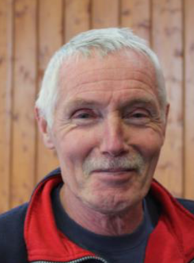
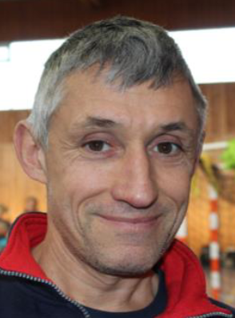
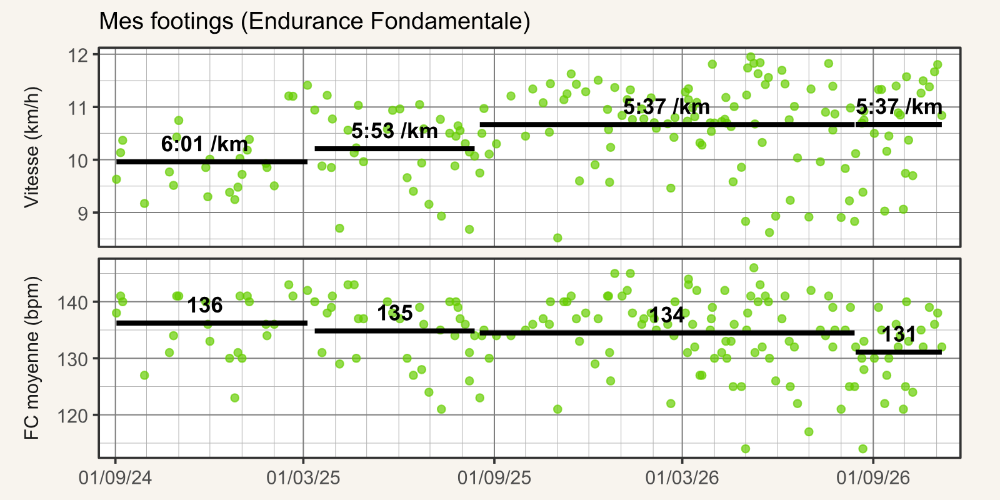
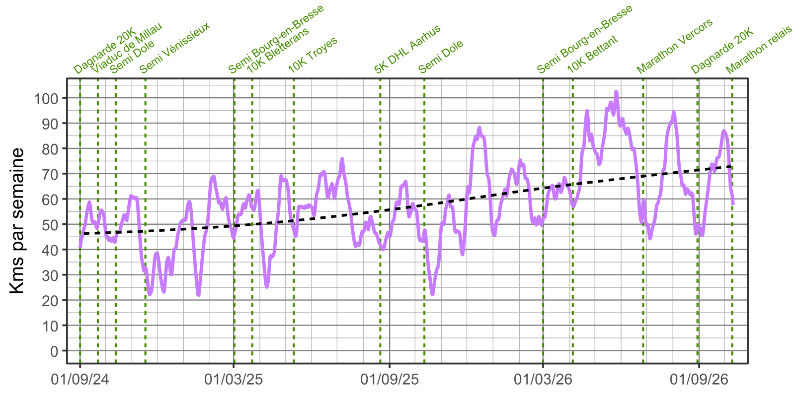
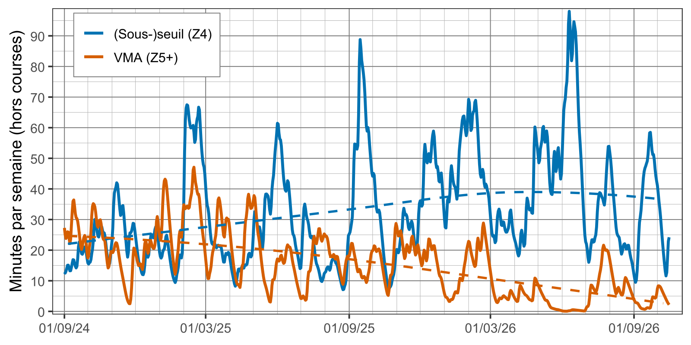
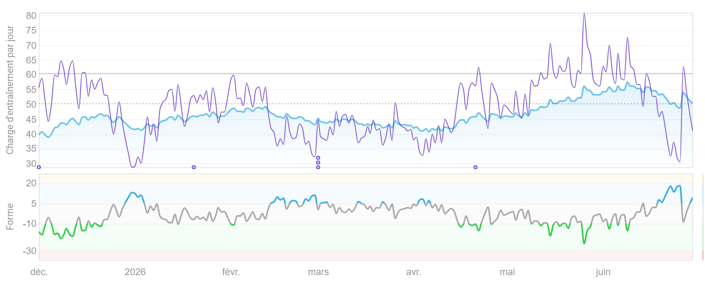
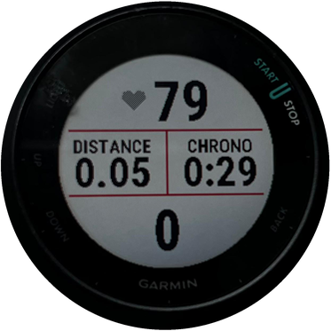
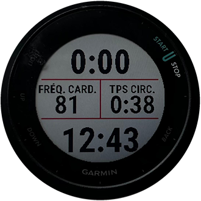
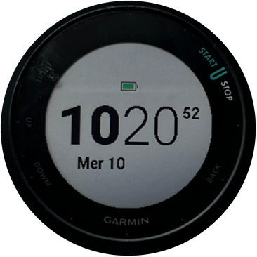

ASC Balan · Stage des entraîneurs
Les bonnes pratiques du coureur · Florian
Plus d’infos sur guide.balan-running.fr
Ouverture

Entraîneur
Entraîneur

Entraîneur
Entraîneur
En formation
En formation
Un plan personnalisé, un doute sur une douleur, une course à préparer : il suffit de demander.
2 / 70
Ouverture
1:43:53
Annecy 2023
1:37:45
Bourg 2024
1:31:58
Dole 2024
1:29:10
Bourg 2025
1:27:36
Dole 2025
1:23:48
Bourg 2026
1:20:00
Bourg 2027
≈ +1 km/h par an
au semi : de 12,2 à 15,1 km/h
3 / 70
Ouverture
1
L’essentiel du volume en endurance fondamentale, piloté au cœur.
2
Un seul levier à la fois, petit à petit.
3
Sommeil, semaines allégées, vraie récupération.
4
Une douleur qui revient, c’est un message : on adapte.
4 / 70
VMA, fréquence cardiaque, ressenti
5 / 70
Repères
La vitesse à VO2max, tenable environ 6 minutes.
Caler les allures du fractionné, surtout le mardi.
Le test VAMEVAL au club, 2 fois par an.
VMA
+3 %
17,3 → 17,8 km/h
Semi
+10 %
13,8 → 15,1 km/h (1:31:58 → 1:23:48)
D’octobre 2024 à mars 2026
Un outil pour les allures, pas un objectif.
6 / 70
Repères
220 − âge
Une moyenne de population. D’un coureur à l’autre, l’écart peut dépasser 10 à 20 battements.
En fin de test VMA, ou sur une séance intense en côte.
Le matin au réveil, avant de se lever.
7 / 70
Repères
FC cible = FC repos + % × (FC max − FC repos)
Ex. 70 % : 55 + 0,7 × 130 = 146 bpm
| Zone | % FCR | Exemple (bpm) | Pour quoi |
|---|---|---|---|
| Z1 | 50 à 60 % | 120 à 133 | Récupération, échauffement |
| Z2 | 60 à 70 % | 133 à 146 | Endurance fondamentale |
| Z3 | 70 à 80 % | 146 à 159 | Endurance active |
| Z4 | 80 à 90 % | 159 à 172 | Seuil |
| Z5 | 90 à 100 % | 172 à 185 | VMA, fractionné court |
Exemple pour une FC max de 185 et une FC de repos de 55. À régler dans la montre : zones « en % de la FC de réserve ».
8 / 70
Repères
1
2
3
4
5
6
7
8
9
10
1 à 7 : là où se fait l’essentiel de la progression.
8 à 10 : rare. Le jour de la course, pas tous les mardis.
Le but : enchaîner les semaines, pas finir vidé.
9 / 70
Repères · Motivation
Gardez la ou les réponses en tête : ce sont elles qui vous feront sortir les jours sans motivation.
La santé
Le plaisir
Décompresser
Le groupe
Un chrono
Un défi
10 / 70
Chacune a un rôle, l’EF d’abord
11 / 70
Séances
80 %
Endurance fondamentale
20 %
Seuil, VMA, allure de course
Moi, sur les 12 derniers mois : 75 % du temps en zones 1 et 2 (68 % l’année d’avant).
Les athlètes d’endurance de haut niveau : environ 80 %.
12 / 70
Séances · Endurance fondamentale
Zone 2
60 à 70 % de la FCR
On peut parler
sans être essoufflé
On peut respirer
par le nez
À l’arrivée
autant, voire plus d’énergie qu’au départ
13 / 70
Séances · Endurance fondamentale
L’EF est ici
Le piège
Z1
Z2
Z3
Z4
Z5
Récupération
50-60 % FCR
Endurance
60-70 % FCR
Zone grise
70-80 % FCR
Seuil
80-90 % FCR
VMA
90-100 % FCR
Z3 : trop vite pour récupérer, trop lent pour vraiment progresser.
14 / 70
Séances · Endurance fondamentale
Plus de sang à chaque battement.
Plus d’oxygène livré aux muscles.
Et garder le glycogène pour les efforts durs.
Entre les séances, et même entre les répétitions.
Moins de contraintes, et les tendons se renforcent doucement.
La base de la pyramide : plus elle est large, plus on monte haut.
15 / 70
Séances · Endurance fondamentale
Masquez l’allure.
En EF, la montre affiche la FC en grand. L’allure, on la regarde après, si on veut.
16 / 70
Séances · Endurance fondamentale

6:01
min/km, sept. 2024 à févr. 2025
5:37
min/km, sept. 2025 à août 2026
À FC moyenne quasi égale : 136 puis 134 bpm.
17 / 70
Séances · Endurance fondamentale

45 → 70
km par semaine en tendance, de sept. 2024 à sept. 2026
Avec quelques creux, mais beaucoup de régularité.
18 / 70
Séances · Fractionné court
| Distance | % VMA | Travail | Allure | Chrono | Reps |
|---|---|---|---|---|---|
| 200 m | 105 % | 12 min | 3:49 | 46 s | x 15,8 |
| 300 m | 102 % | 14 min | 3:55 | 1 min 11 s | x 11,9 |
| 400 m | 100 % | 16 min | 4:00 | 1 min 36 s | x 10,0 |
| 500 m | 98 % | 18 min | 4:05 | 2 min 2 s | x 8,8 |
| 1000 m | 92 % | 24 min | 4:21 | 4 min 21 s | x 5,5 |
Exemple pour une VMA de 15 km/h. Vos chiffres : le calculateur du guide.
Environ 16 min d’effort, 5 km au maximum.
Déjà beaucoup forcé ? On peut s’arrêter à 4 km.
Fini les 5 km facilement ? Un peu plus vite la prochaine fois.
L’hiver au stade, au temps : même effort, pas même allure qu’en été. Et rester constant du début à la fin.
En prépa cross (conseil de Jean-Jacques) : s’efforcer de rattraper et doubler celui devant soi.
19 / 70
Séances · Au club
Les premiers s’arrêtent à 300 m et vous êtes à 280 ou 290 m ? Coupez aussi. Vous gardez votre récup.
Partez 2 ou 3 s après le top et remontez le groupe, ou trottinez plus vite pendant la récup.
Mieux vaut 290 m en groupe que 300 m seul.
L’hiver au stade, au temps : les plus rapides prennent les virages à l’extérieur, les autres à la corde. Pendant la récup, on se rapproche du groupe.
20 / 70
Séances · Fractionné court
Pour beaucoup, ce n’est pas le facteur limitant. Et elle génère beaucoup de fatigue.

De moins en moins de VMA, de plus en plus de seuil.
Et c’est sur cette période que j’ai le plus progressé.
Un retour perso, pas une règle universelle.
21 / 70
Séances · Seuil
Zone 4
80 à 90 % de la FCR
Ex. FC max 185, repos 55 : 159 à 172 bpm
Au cœur, pas au chrono
L’allure change avec la chaleur, le vent, le terrain, la fatigue. La FC, non.
Tenir vite, longtemps
La qualité qui compte du 10K au marathon. La zone la plus rentable pour la travailler.
Le milieu de la zone 4. Presque le même bénéfice, et on en garde sous le pied pour la suivante.
C’est l’idée de la méthode norvégienne ou des Norwegian singles.
Exemples de séances sous le seuil
200 x20 @5K récup 30 s
1000 x7 @15K récup 1 min
2000 x4 @25K récup 1 min 30
3000 x3 @32K récup 2 min
@10K = à l’allure d’un 10K
22 / 70
Séances · Sortie longue
1/3
du volume de la semaine, au maximum
+15’
au maximum d’une semaine à l’autre
EF
la même allure qu’un footing, en plus long
Le moment idéal pour tester son ravitaillement : boisson, gels, chaussures, tenue.
En prépa spécifique : on peut y glisser des blocs à l’allure de course, par exemple 3 × 2 km allure semi ou 3 × 3 km allure marathon.
23 / 70
Séances · Renforcement
1 fois par semaine
ou 5 minutes par jour : c’est déjà suffisant.
Moi : surtout du gainage et des fessiers, un peu de tendon d’Achille.
Une foulée plus économe
Des muscles stabilisateurs plus solides
Moins de blessures
Un vieillissement musculaire ralenti
Des belles fesses et des beaux abdos 😉
On en reparle à 16h45 avec coach Baptiste.
24 / 70
Séances · Varier
Sols souples, appuis qui varient.
Les montées travaillent les jambes, le terrain la stabilité.
On oublie le chrono, on court au ressenti.
Attention aux descentes : elles tapent fort sur les cuisses. Là aussi, on y va progressivement.
25 / 70
Séances
Lun
Repos
Mar
VMA courte
Club
Mer
EF courte
25 à 30 min
Jeu
Seuil ou spécifique
Club
Ven
Repos
Sam
EF
+ renfo
Dim
Sortie longue
en EF
2 séances intenses, 3 séances lentes : la règle des 80/20, en pratique.
26 / 70
À retenir · Règle d’or n°1
L’EF n’est pas du temps perdu : c’est la base de tout le reste.
1 · Lent, souvent
2 · Progressif, toujours
3 · Le repos fait progresser
4 · Écouter son corps
27 / 70
Charge, progressivité, récupération
28 / 70
Progresser sans casser
S1
S2
S3
S4 allégée
S5
S6
S7
S8 allégée
La semaine allégée n’est pas perdue : c’est là que le corps assimile le travail des trois précédentes.
29 / 70
Progresser sans casser
1
Plus souvent, même court. Idéalement, un peu chaque jour, en EF.
2
Fréquence stable ? On allonge les séances, petit à petit.
3
En dernier : plus de qualité, avec des séances dures bien espacées.
Jamais les trois en même temps.
Le levier n°1, c’est le volume. Au début, quitte à faire moins de fractionné.
30 / 70
Progresser sans casser
Côtes, descentes techniques
Route, trail, herbe, piste
Nouveau modèle, drop, retour d’énergie, semelles
Cadence, attaque de pied
Le cœur s’adapte en semaines, les tendons et les os en mois.
Un changement trop brutal : micro-lésions, puis douleurs, puis blessure.
31 / 70
Progresser sans casser
Grosse semaine au travail, nuits courtes ? On allège l’entraînement, sans culpabiliser.
32 / 70
Progresser sans casser · Suivi

Transition
Frais : pour la course
Zone grise
Optimal : à l’entraînement
Risque élevé : jamais
Gratuit, 5 minutes. Le lien d’invitation et la procédure sont dans le guide. Et Vincent et Florian peuvent suivre vos séances. Autre onglet disponible : le % de temps dans chaque zone.
33 / 70
À retenir · Règle d’or n°2
Un seul levier à la fois. Et laisser au corps le temps de s’adapter.
1 · Lent, souvent
2 · Progressif, toujours
3 · Le repos fait progresser
4 · Écouter son corps
34 / 70
Progresser sans casser
Niveau de départ
Séances
Assez de récupération :
on monte, petit à petit
Trop, trop souvent :
on s’enfonce
35 / 70
Progresser sans casser
La base de toute récupération.
Repos complet après une séance dure ou une course
EF très lente, marche, vélo ou natation tranquilles
Glucides, protéines, hydratation
Se détendre, couper, moins de stress
Café : pas après 14 h, la moitié est encore là 6 h plus tard.
Alcool : on s’endort plus vite, mais on dort moins bien.
36 / 70
Progresser sans casser
15 à 20 min
de footing lent avant une séance rapide ou une course.
10 à 15 min
de footing très lent après une séance dure ou une course.
À distance
des séances : pas juste avant, ni juste après une séance dure.
5 min suffisent
Appli GOWOD : 300 exercices. Mes 20 préférés sont dans le guide.
37 / 70
À retenir · Règle d’or n°3
Sommeil, semaines allégées, un jour facile après un jour dur.
1 · Lent, souvent
2 · Progressif, toujours
3 · Le repos fait progresser
4 · Écouter son corps
38 / 70
Récup entre les deux blocs
39 / 70
4 phases, et un exemple réel
40 / 70
Construire une prépa
Un seul objectif par an : moins de motivation, trop de pression.
Quelques objectifs par an, sur des distances variées, bien espacés.
Pas de vraie prépa, mal récupéré, on sature.
Se laisser le temps de construire les fondations.
41 / 70
Construire une prépa
1
Aussi longue que possible
Beaucoup de volume en EF, et toutes les allures. La fondation.
2
4 à 8 semaines
On resserre vers l’allure de course. Au pic : la distance de course, sur la semaine.
3
1 à 3 semaines
Baisser le volume progressivement. Garder fréquence et intensité.
4
0 à 2 semaines
EF légère, aucune séance de qualité.
La phase la plus souvent bâclée : la 1.
La plus souvent oubliée : la 4.
42 / 70
Construire une prépa
Remplir le temps libéré par d’autres activités tout aussi fatigantes.
Tomber malade au relâchement.
43 / 70
Construire une prépa · Le jour J
Déjà portées sur des séances longues.
Gels et boissons testés à l’entraînement.
Celle des séances test, pas celle du rêve.
× 10
Une seconde gagnée au départ peut se payer dix fois à la fin.
Premier tiers : l’impression d’avoir le frein à main. Premier marathon : 10 min de marge sur le chrono prédit.
44 / 70
Construire une prépa · Exemple
Générale
Spécifique
Semi
Récup
90
80
94
46
36
68
64
74
81
55
53
50
63
59
S1
S2
S3
S4
S5
S6
S7
S8
S9
S10
S11
S12
S13
S14
Km par semaine
45 / 70
Construire une prépa · Exemple
Froid et pluie, malade après Noël, dos bloqué en février, seulement 3 mois.
La base de volume de décembre. Et les glucides à l’entraînement.
Une phase générale nettement plus longue, avant l’allure spécifique. Direction 1:20.
La base d’abord. La vitesse ensuite.
46 / 70
Construire une prépa · Exemple
Générale
Spécifique
Affûtage
Course
Récup
Reprise
67
104
81
68
88
101
96
83
87
75
63
60
25
65
S1
S2
S3
S4
S5
S6
S7
S8
S9
S10
S11
S12
S13
S14
Km par semaine
47 / 70
Construire une prépa · Exemple
Le ravito : environ 40 g de glucides par heure, répété à l’entraînement. Le col monté sans marcher.
La chaleur et l’altitude : FC trop haute dès le départ. Pas assez d’eau sur la fin, et fin en marchant.
Partir 2 bpm plus bas. Viser 60 g de glucides par heure. Des sorties trail à l’entraînement.
Le jour J, c’est la météo qui fixe l’allure.
48 / 70
Ce que 9 coureurs du club ont appris
49 / 70
Blessures
| Coureur | Blessure | Erreur principale | Arrêt |
|---|---|---|---|
| Martin | Tendon d’Achille | Douleur ignorée, chaussures usées | 3,5 semaines |
| Vincent | Essuie-glace | Volume augmenté trop vite | 8 sem. allégées |
| Pauline | Périostite tibiale | Trop de changements d’un coup | 1,5 mois |
| Florian | Dos et hanche | Bouteille en main, chaussures inadaptées | 48 heures |
| Sylvie | Hanche | Pas de renfo à la reprise après marathon | 1 mois |
| Christelle | Achille et ménisque | Intensité trop haute, chaussures usées | 8 semaines |
| Thierry | Psoas | Surentraînement | Aucun |
| Sébastien | Ischio-jambier | Surentraînement, dossards rapprochés | 3 mois |
| Gilles | Ischio-jambier | Intensité, chaussures neuves le jour J | 2 ans |
50 / 70
Blessures
7/9
Volume ou intensité augmentés brutalement, surentraînement.
5/9
Usées, neuves le jour J, changées sans transition, ou bas de gamme.
4/9
La douleur était là avant, et on a continué.
Souvent, plusieurs causes à la fois. Et presque toujours, des causes évitables.
51 / 70
Blessures
Une douleur qui revient toujours au même moment
Une douleur qui persiste après l’effort
Une raideur inhabituelle, une perte de mobilité
Fatigue durable, courbatures permanentes, sommeil perturbé, irritabilité, perte de motivation
Ce ne sont pas des douleurs « normales » : c’est un déséquilibre ou une surcharge.
52 / 70
Blessures
| Niveau | Ce qu’on ressent | Ce qu’on fait |
|---|---|---|
| 0 | Rien | On suit le plan |
| 1 | Une gêne, la foulée ne change pas | Pas plus intense que le seuil, volume inchangé |
| 2 | La douleur modifie la foulée | Plus d’intensité : footings seulement |
| 3 | On boite en marchant | Arrêt de la course, et on consulte |
Pendant la sortie : douleur aiguë, ou qui augmente au fil des km ? On rentre.
Repères de coachs, pas un avis médical. Si une douleur ne passe pas en quelques jours : un professionnel de santé qui connaît la course.
53 / 70
Blessures
1
Réduire volume, intensité et fréquence
2
Supprimer les séances à impact : VMA, côtes, sortie longue
3
Oublier le plan : on ne force pas pour le suivre à tout prix
4
Garder le cardio sans les chocs : vélo, elliptique, natation, aquajogging
> 1 semaine
On consulte : médecin du sport, kiné, podologue.
Forcer sur une douleur, c’est transformer un déséquilibre passager en blessure chronique.
54 / 70
Blessures · Vigilance
Avec la déshydratation de l’effort : risque d’insuffisance rénale aiguë.
Lésions, nausées, diarrhées : parmi les premières causes d’abandon.
L’inflammation fait partie de la réparation. Et masquer la douleur, c’est ignorer le signal.
Aucun AINS (ibuprofène, aspirine…) dans les 48 h avant une course. Besoin d’un médicament pour pouvoir courir ? C’est le signal d’arrêter, pas de traiter.
55 / 70
À retenir · Règle d’or n°4
Une douleur qui revient, c’est un message. Plus d’une semaine : on consulte.
1 · Lent, souvent
2 · Progressif, toujours
3 · Le repos fait progresser
4 · Écouter son corps
56 / 70
Chaussures, montre, cadence
57 / 70
Matériel · Chaussures
Pronateur ou neutre : pas de bénéfice clair des chaussures « correctrices ». Semelles : si douleur récurrente.
Accroupi. Souvent une demi-pointure ou une pointure au-dessus.
Quand le pied a gonflé, comme en sortie longue.
Le pied tient mieux. Serrer uniformément, resserrer après quelques minutes.
Et quand le volume augmente : de bonnes chaussures, pas usées (elles reviennent dans 5 blessures sur 9). Astuce : un comparateur de prix, comme The Running Collective, pour trouver des (grosses) réductions.
Terre de Running Ambérieu : analyse de foulée sur tapis, 10 % de réduction pour les membres du club.
58 / 70
Matériel · Chaussures
Légèreté, retour d’énergie, moins de fatigue musculaire.
Des mollets et un tendon d’Achille solides. Semelles hautes : moins de stabilité.
Pour les courses et quelques séances. Le reste en chaussures plus stables, 2 ou 3 paires en rotation.
Le cardio progresse plus vite que les tendons.
59 / 70
Matériel · Montre

La FC en grand, pas l’allure

Allure instantanée et moyenne du lap

Pour ne pas rater les gammes et la pizza du jeudi
Laps : automatiques au km, plus un appui manuel au début de chaque fractionné et de chaque récup.
60 / 70
Technique · Cadence
Débutants
145 à 160
pas par minute, souvent
Coureurs réguliers
170 à 180
pas par minute, allure modérée
Moi
152 → 165
en 3 mois, puis stable. 168 en course.
Trop basse, elle va souvent avec une foulée trop longue et plus d’impact. Pour l’augmenter :
Moins loin devant, moins de bruit à l’impact.
Chaque palier sur plusieurs semaines.
Caler les bras sur le rythme, les jambes suivent.
61 / 70
Le complément indispensable
62 / 70
Manger et boire
Sous-alimentation chronique : blessures à répétition, stagnation, fatigue.
Glucides
le carburant, à refaire après l’effort
Protéines
la réparation des muscles
Lipides
hormones, vitamines : à ne pas supprimer
Pour la santé : pas trop gras, pas trop salé, pas trop sucré, peu d’ultra-transformé.
63 / 70
Nutrition
1 à 2 g
par kg de poids et par jour, selon le volume d’entraînement.
Pour 70 kg : environ 70 à 140 g par jour.
| Exemples | Protéines |
|---|---|
| 2 œufs | ≈ 13 g |
| 1 pot de skyr (100 g) | ≈ 9 g |
| Lentilles (80 g crues) | ≈ 20 g |
| Une poignée de cacahuètes (30 g) | ≈ 8 g |
| Fromage (30 g, du chèvre au comté) | ≈ 5 à 9 g |
| Pâtes (100 g crues) | ≈ 12 g |
| Thon au naturel (1 boîte, 100 g) | ≈ 25 g |
| Blanc de poulet cuit (100 g) | ≈ 30 g |
64 / 70
Nutrition
Os, muscles, immunité.
D’octobre à mars, le soleil ne suffit pas.
Les os.
Produits laitiers, eaux calciques, amandes. Contre les fractures de fatigue.
Transporte l’oxygène.
Besoins plus élevés chez les coureurs, surtout les femmes. Fer végétal : avec de la vitamine C, pas avec le café.
Fatigue inexpliquée, performances en baisse ? Prise de sang d’abord.
Vitamine D et calcium : sans risque aux doses habituelles, peu utiles sans carence.
Fer : jamais « au cas où ». Le corps ne sait pas éliminer l’excès.
Pas un avis médical : à voir avec votre médecin.
65 / 70
Manger et boire
2 à 3 h avant : glucides complexes (pain, pâtes, riz), peu de gras et de fibres.
Départ très matinal : banane ou biscotte-confiture, 30 à 60 min avant.
Boire : selon sa soif, un peu plus quand il fait chaud.
Plus d’1 h : environ 30 g de glucides par 50 cL, avec un peu de sel.
Gels : testés à l’entraînement, en augmentant petit à petit.
Glucides et protéines : lait chocolaté, yaourt et miel, riz et poulet.
Mon déclic : la boisson à 30 g de glucides sur chaque sortie de plus d’une heure. Je récupère nettement mieux, et j’entraîne ma digestion pour la course.
66 / 70
Conclusion
5 minutes de renfo pendant que le café coule.
Mieux vaut imparfait chaque semaine que parfait une semaine sur deux.
Le groupe fait sortir les jours sans. Le club, c’est fait pour ça.
Une petite habitude qui tient bat une grande résolution.
67 / 70
Conclusion
1
L’essentiel du volume en endurance fondamentale, piloté au cœur.
2
Un seul levier à la fois, petit à petit.
3
Sommeil, semaines allégées, vraie récupération.
4
Une douleur qui revient, c’est un message : on adapte.
Et de la patience : on progresse en années, pas en semaines.
68 / 70
Conclusion
Tout le contenu d’aujourd’hui, des vidéos à consulter pour aller plus loin, et des calculateurs : zones de FC, allures de fractionné, chronos estimés. Et l’an prochain : mon retour sur les Norwegian Singles.
Déjà blessé ? Le formulaire du guide permet de partager votre retour avec le club.
Pour un plan personnalisé et toutes vos questions.
Je peux vous aider à en configurer une, avec les données de votre montre. Un complément aux entraîneurs, pas un remplaçant.
69 / 70
70 / 70